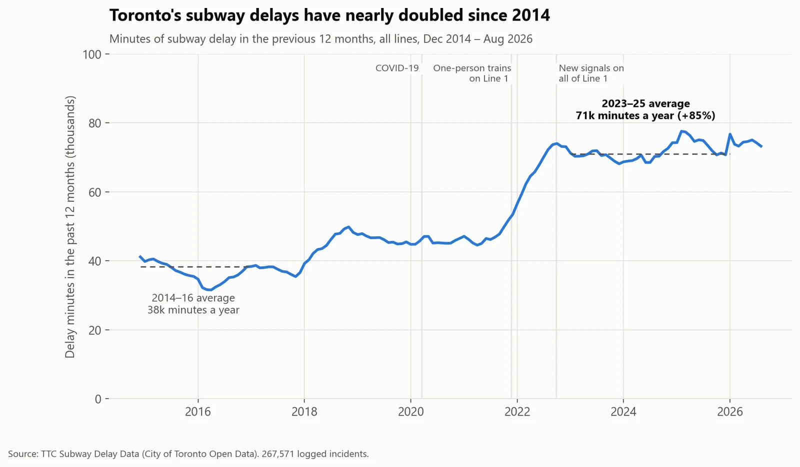
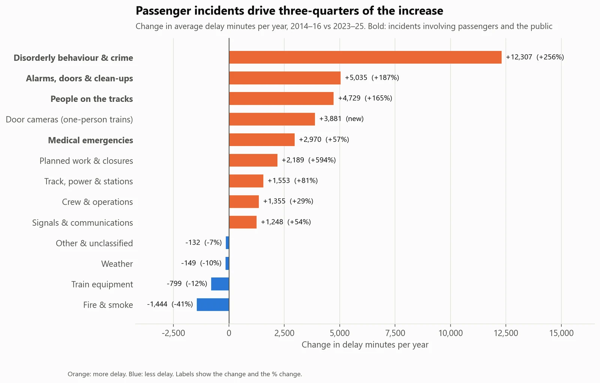
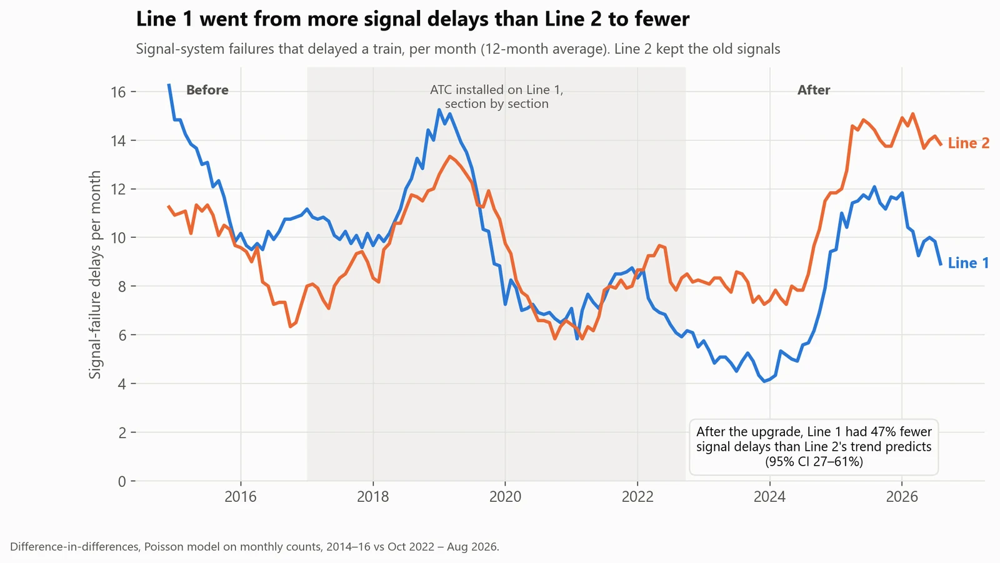
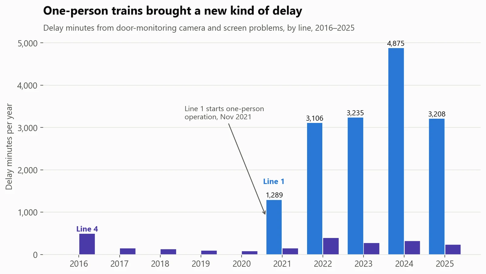
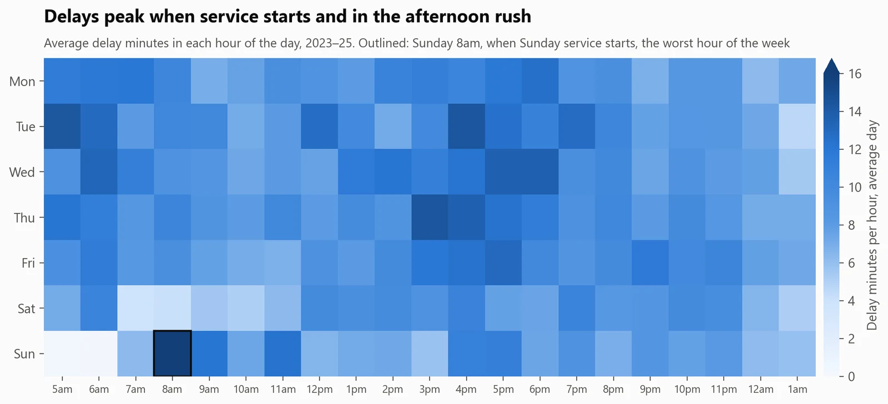
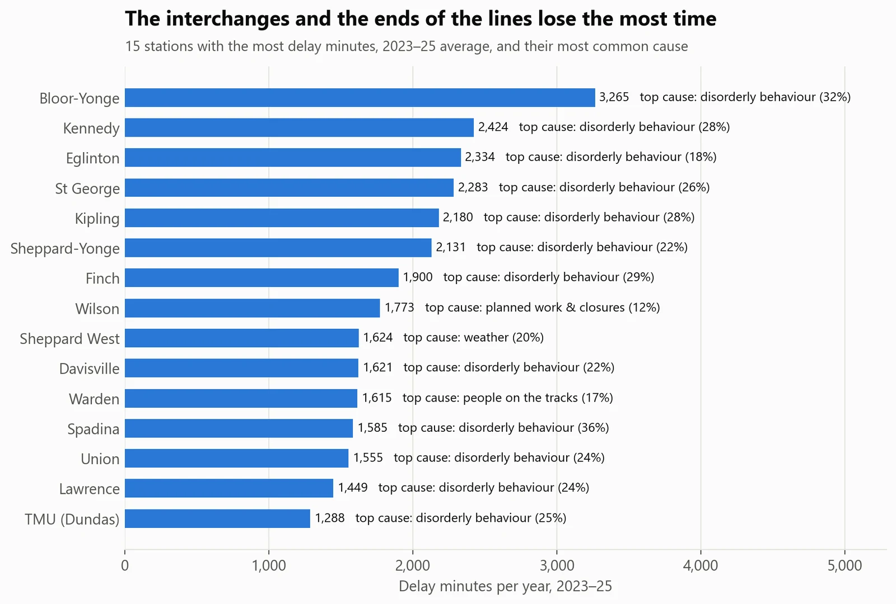

Work/PRJ-04/Transit operations · Toronto
Toronto's subway delays nearly doubled. What's behind them?
Mostly passengers and the public, not the trains. The subway lost 71,000 minutes a year to delays in 2023–25, 85% more than in 2014–16, and three-quarters of the increase comes from disorderly behaviour, people on the tracks, passenger alarms and medical emergencies. Train breakdowns fell 12%. Line 1's new signal system worked: it has about half the signal delays Line 2's trend predicts.
- Data
- 267,571 TTC subway incidents, January 2014 to August 2026 (City of Toronto Open Data)
- Methods
- Data cleaning, SQL modelling, difference-in-differences
- Tools
- SQL (DuckDB), Python: pandas, statsmodels
- Code
- github.com/BoredMongoose/ttc-subway-delays ↗
Where should the TTC focus to cut subway delays?
Spend where the minutes went: faster response to passenger, security and track-level incidents (57% of delay minutes) and Line 1's door cameras. Line 1's results support upgrading Line 2's signals.
Of the increase in delays comes from passengers and the public, not the trains. Passenger and public incidents now cost about 40,600 delay minutes a year, so every 10% cut in them saves about 4,000.
01Results
Delays nearly doubled.






02How I did it
From raw data to a decision.
- Downloaded 12 years of delay logs (23 Excel sheets and a CSV) from Toronto's open-data API.
- Cleaned hand-typed fields: 111 spellings of the subway line became 5 values, and 2,221 spellings of locations were matched to the 75 stations with an alias list and fuzzy matching (99.9% resolved). I also repaired the TTC's double-encoded code list and removed 271 duplicate rows.
- Grouped 234 TTC delay codes into 13 plain-English causes, and built the analysis tables in SQL with 18 automated data-quality checks. The checks caught real problems, such as duplicates that differed only in a junk direction value.
- Tested Line 1's new signal system against Line 2 with a difference-in-differences model, and checked it three ways: the two lines moved in parallel before the upgrade, using Line 4 as the comparison gives the same answer, and non-signal delays (a placebo) didn't improve.
03What could make this wrong
The limits, said out loud.
- 01Delay minutes measure the service, not passengers: a delay at 8am affects more riders than one at 11pm, and the data has no ridership.
- 02Some of the rise in disorderly-behaviour incidents may be more reporting, since the city added safety staff in January 2023.
- 03The signal comparison assumes Line 2 shows what Line 1 would have done without the upgrade.
04What I learned
- 01Most of the work was cleaning: 111 spellings of a subway line and 2,221 spellings of its stations. The automated checks caught problems I'd never have spotted by eye.
- 02A comparison group turns 'before and after' into evidence. Line 2 showed what Line 1 would have done without its upgrade.
- 03New technology brings new failure modes: the signal upgrade removed old faults but added new ones, and one-person trains added door-camera delays.
05What I'd do next
- 01Add ridership, so delays are weighted by the number of passengers they hit, not just minutes.
- 02Get time-to-clear for each incident type, to find which response steps take longest.
- 03Repeat the signal comparison when Line 2's upgrade starts.
- 04Turn the marts into a monthly operations dashboard by line, station and cause.